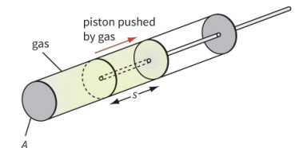
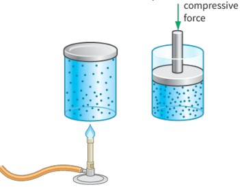

Introduction: What is Thermodynamics?
- If we lift up a stone, it has gravitational potential energy. If we throw it, it has kinetic energy. But if we heat the stone, where does the energy go?
- The stone gets hotter, but it is not higher or faster. Where did the energy from the heater go?
The energy seems to have disappeared into the stone. In fact, the stone gets hotter, and that means the molecules that make up the stone have more energy — both kinetic and electrical potential energy. They vibrate more and faster, and they move a little further apart.
1. Internal Energy of a System
The internal energy of a system is the sum of the random distribution of kinetic and potential energies associated with the atoms/molecules that make up the system.
A rise in temperature of an object leads to an increase in its internal energy.
Internal Energy of Ideal Gas
For an ideal monatomic gas, the internal energy is purely kinetic (as there are no intermolecular forces). From Unit 15, we know:
\[U = \frac{3}{2}nRT = \frac{3}{2}NkT\]
or for total internal energy of N molecules:
\[U = N \times \frac{3}{2}kT\]
- State Function: Internal energy depends only on the current state (P, V, T), not on the path taken to reach that state
- Temperature Dependence: For ideal gases, \(U \propto T\) only
- Random Distribution: The kinetic and potential energies are randomly distributed among all molecules
2. Doing Work - Gas
2.1 Work Done BY Gas (Expansion)
When a gas expands, it pushes against its surroundings and does work. Consider a gas in a cylinder with a movable piston:

Gas expands and pushes piston, doing work on surroundings
2.2 Work Done ON Gas - By Heating
The walls of the container become hot and so its molecules vibrate more vigorously. The molecules of the cool gas strike the walls and bounce off faster. They have gained kinetic energy, and we say the temperature has risen.

Molecules gain kinetic energy after colliding with hot wall
2.3 Work Done ON Gas - By Piston
In this case, a wall of the container is being pushed inwards. The molecules of the cool gas strike a moving wall and bounce off faster. They have gained kinetic energy and again the temperature has risen. This explains why a gas gets hotter when it is compressed (like in a bicycle pump).
2.3.1 Work Done BY Gas (Expansion)
When a gas expands at constant pressure, it pushes against the external pressure and does work on the surroundings:
\[W_{\text{by}} = P \Delta V = P(V_2 - V_1)\]
Where:
\(P\) = external pressure (Pa)
\(\Delta V\) = change in volume (m³)
\(W_{\text{by}}\) = work done BY the gas (J)
Work done by gas = Force × Distance = \((P \times A) \times (\Delta V/A) = P \times \Delta V\)
The gas pushes the piston with force \(F = P \times A\) through distance \(d = \Delta V/A\), doing work \(W = F \times d = P\Delta V\).
2.3.2 Work Done ON Gas (Compression)
When a gas is compressed at constant pressure, work is done on the gas by the external force:
\[W_{\text{on}} = -P \Delta V = P(V_1 - V_2)\]
Where:
\(W_{\text{on}}\) = work done ON the gas (J)
Note: For compression, \(\Delta V = V_2 - V_1 < 0\), so \(W_{\text{by}} = P\Delta V < 0\), meaning work is done ON the gas.
- Expansion (V increases): \(W_{\text{by}} = P\Delta V > 0\) — gas does work on surroundings
- Compression (V decreases): \(W_{\text{by}} = P\Delta V < 0\) — surroundings do work on gas
- Relationship: \(W_{\text{on}} = -W_{\text{by}}\)
- \(W_{\text{by}} > 0\): Gas expands, does work on surroundings (energy leaves system)
- \(W_{\text{by}} < 0\): Gas compressed, work done on gas (energy enters system)
- Alternatively using \(W_{\text{on}}\): positive when work is done ON the gas (compression)
2.4 P-V Diagrams and Work Calculation
The work done by a gas during expansion or compression can be visualized using a pressure-volume (P-V) diagram:
For an infinitesimal volume change:
\\[\delta W = P \, dV\\]
For a finite change:
\\[W = \\int_{V_1}^{V_2} P \, dV\\]
2.5 State Change Analysis
Scenario: An ideal gas undergoes a change from state a to state b (as shown in the diagram below)
- In this process, is the gas doing work on the surroundings, or are the surroundings doing work on the gas?
- Is the work done on the gas positive or negative?
- What is the magnitude of the work?
- The gas volume increases, so work is done BY the gas
- Work done ON the gas is negative (because work done BY the gas is positive)
- Magnitude of work = area under the P-V curve
2.6 Sign Convention for Work
- State moves left (volume decreases) → work done ON gas → Won > 0
- State moves right (volume increases) → work done BY gas → Wby > 0
3. The First Law of Thermodynamics
Energy is conserved; that is, energy cannot simply disappear, or appear from nowhere. All the energy put into a gas by heating it and by doing work on it must end up in the gas; it increases the internal energy of the gas.
\[\Delta U = Q + W_{\text{on}}\]
or equivalently:
\[\Delta U = Q - W_{\text{by}}\]
Where:
\(\Delta U\) = Change in internal energy (J) — positive means internal energy increases
\(Q\) = Heat added to system (J) — positive when heat enters
\(W_{\text{by}}\) = Work done BY system (J) — positive when gas expands
\(W_{\text{on}}\) = Work done ON system (J) — positive when gas is compressed
- \(Q > 0\): Heat added TO the system
- \(Q < 0\): Heat removed FROM the system
- \(W_{\text{by}} > 0\): Work done BY the system (expansion)
- \(W_{\text{by}} < 0\): Work done ON the system (compression)
First Law Summary Table
| Condition | Internal Energy | Heat | Work |
|---|---|---|---|
| Heated at constant volume | Increases | Added (Q > 0) | Zero (W = 0) |
| Compressed rapidly | Increases | Zero (Q = 0) | Negative (W < 0) |
| Expands isothermally | Constant | Added (Q > 0) | Positive (W > 0) |
Example Calculation
Solution:
\(W = P\Delta V = 101 \times 10^3 \times 2 \times 10^{-3} = 202 \text{ J}\)
a) A gas is heated by supplying it with 250 kJ of thermal energy; at the same time, it is compressed so that 500 kJ of work is done on the gas. Calculate the change in internal energy.
\(\Delta U = Q + W_{\text{on}} = 250 + 500 = 750 \text{ kJ}\)
b) The same gas is heated as before with 250 kJ of energy. This time the gas is allowed to expand so that it does 200 kJ of work on its surroundings. Calculate the change in internal energy.
\(\Delta U = Q - W_{\text{by}} = 250 - 200 = 50 \text{ kJ}\)
4. P-V Graph Analysis
An ideal gas undergoing a change from state A to state B
(Image to be inserted here)
4.1 Work from P-V Diagrams
An ideal gas undergoing a change from state a to state b:
Answer: The volume of the gas increases, so work is done by the gas on the surroundings.
Answer: The work done ON the gas is negative (since work is done BY the gas). The magnitude equals the area under the P-V curve between the two states.
Answer: In isobaric condition for ideal gas, as V increases, T also increases (from \(PV = nRT\)). Therefore, the gas is absorbing heat and the internal energy increases.
4.2 Direction Convention for P-V Diagrams
- State to the left: Work done ON gas is positive (compression)
- State to the right: Work done BY gas is positive (expansion)
- Work magnitude: Area under the P-V curve
4.3 Cyclic Processes on P-V Diagrams
A → B → C → A cycle
(Image to be inserted here)
Consider a cycle: State A → State B → State C → State A
Key insight: Since internal energy is a state function, \(\Delta U = 0\) for a complete cycle.
Therefore: \(Q_{\text{net}} = W_{\text{net}}\)
The net work done equals the area enclosed by the cycle on the P-V diagram.
4.4 Detailed Example: A → B → C Cycle
A → B: Isobaric expansion (constant pressure)
- Volume increases at constant pressure
- Work done BY gas = Area under AB
- Temperature increases (\(V \propto T\) at constant P)
- Heat is absorbed
B → C: Isochoric cooling (constant volume)
- Volume constant, pressure drops
- Work done = 0
- Temperature decreases
- Heat is released
C → A: Return path
- Compression process
- Work done ON gas
For states A and C: If they have the same internal energy (same temperature), then from B to C, the gas maintains constant volume while pressure decreases. This means:
- Temperature decreases
- RMS speed of molecules decreases
- The number of molecules hitting the unit area of wall per unit time is reduced
P4 Checklist: Thermodynamics
Tick off when you can write these from memory:
- Always identify the type of process first (isobaric, isochoric, isothermal, or adiabatic)
- Draw a P-V diagram to visualize the process
- Apply the First Law: \(\Delta U = Q - W\)
- Remember that for ideal gases, internal energy depends only on temperature
- For cyclic processes: \(\Delta U = 0\), so \(Q_{\text{net}} = W_{\text{net}}\)